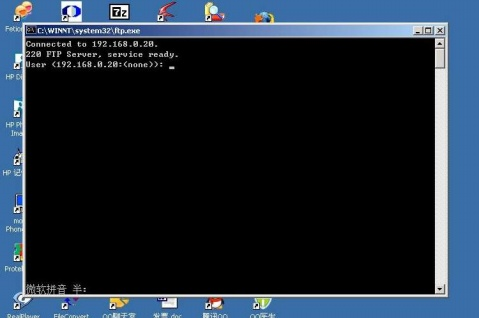
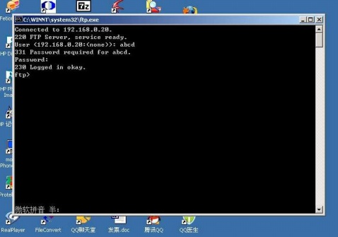
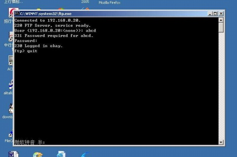

在DOS下进行网络编程（下）

文章目录
该文在上一篇文章的基础上，用一个完整的例子讲解在DOS下的网络编程方法
写在前面
- 在上一篇中，我们为在 DOS 下进行网络编程做了大量的准备工作，我们在 DJGPP 下安装了 WATT-32 库，同时，配置好了网络环境，下面我们用一个实例来说明在 DOS 下进行网络编程的方法。
- 上一篇中，我们编译了 WATT-32 库中的一个范例程序 ftpsrv.c，这是一个 FTP 服务器的范例程序，下面我们也编一个 FTP 服务器的程序，但我们有两点不同，
- 我们主要使用 BSD 网络编程的标准函数，这是一个 UNIX 下进行网络编程的规范，WATT-32 库中实现了绝大多数的 BSD 编程函数，在 《在DOS下进行网络编程（上）》 中介绍了一篇文章 《Beej’s Guide to Network Programming Using internet Sockets》，这篇文章中介绍的编程方法也是基于这个规范，有关在这个规范下的函数介绍可以从下面这个网址下载，也可以参考 UNIX 下网络编程的书籍。
- BSD网络编程函数参考
- 下面继续我们的 FTP 服务器，要编写一个 FTP 服务器程序，首先要了解一下 FTP 协议，有关 FTP 协议的完整规范，可以在 [这里][artivle04] 网址下载：http://whowin.gitee.io/references/rtfc765-ftp.pdf
- 实际操作上并没有协议中那么复杂，况且我们的实例也并不想完成所有的协议，我们的实例计划完成下面的功能：
- 侦听FTP端口21（listen）
- 接受来自FTP客户端的连接请求（accept）
- 接受FTP客户端的登录，但并不对登录信息做验证
- 接受FTP客户端发来的退出（quit）命令，关闭连接（close）
- 为简单起见，整个程序只接受一个 FTP 客户端的请求，当已经为一个 FTP 客户端提供服务时，如果有新的连接请求将不予理睬。
源程序
- 好我们现在可以开始了，以下是我们这个例子的源程序，为了说明方便，我们在前面加了行号。
1 2 3 4 5 6 7 8 9 10 11 12 13 14 15 16 17 18 19 20 21 22 23 24 25 26 27 28 29 30 31 32 33 34 35 36 37 38 39 40 41 42 43 44 45 46 47 48 49 50 51 52 53 54 55 56 57 58 59 60 61 62 63 64 65 66 67 68 69 70 71 72 73 74 75 76 77 78 79 80 81 82 83 84 85 86 87 88 89 90 91 92 93 94 95 96 97 9801 #include <stdio.h> 02 #include <string.h> 03 #include <sys/socket.h> 04 int FtpServer(int s); 05 int main (void) { 06 struct sockaddr_in my_addr; // my address information 07 struct sockaddr_in their_addr; // connector's address information 08 int sockfd, new_fd; // listen on sockfd, new connection on new_fd 09 int sin_size; 10 int Loop; 11 char tempStr[100]; 12 if ((sockfd = socket(AF_INET, SOCK_STREAM, 0)) == -1) { 13 printf("Socket Error!\n"); 14 return 1; 15 } 16 my_addr.sin_family = AF_INET; // host byte order 17 my_addr.sin_port = htons(21); // short, network byte order 18 my_addr.sin_addr.s_addr = INADDR_ANY; // automatically fill with my IP 19 memset(&my_addr.sin_zero, 0, 8); // zero the rest of the struct 20 if (bind(sockfd, (struct sockaddr *)&my_addr, sizeof(struct sockaddr)) == -1) { 21 printf("Bind Error!\n"); 22 return 1; 23 } 24 if (listen(sockfd, 5) == -1) { 25 printf("Listen Error!\n"); 26 return 1; 27 } 28 new_fd = -1; 29 sin_size = sizeof(struct sockaddr_in); 30 new_fd = accept(sockfd, (struct sockaddr*)&their_addr, &sin_size); 31 if (new_fd == -1) { 32 printf("Accept Error!\n"); 33 return 1; 34 } 35 printf ("Got connection from %s\n", inet_ntoa(their_addr.sin_addr)); 36 strcpy(tempStr, "220 FTP Server, service ready.\r\n"); 37 send(new_fd, tempStr, strlen(tempStr), 0); 38 Loop = 1; 39 while (Loop) { 40 Loop = FtpServer(new_fd); 41 } 42 sleep(5); 43 close(new_fd); 44 close(sockfd); 45 return 0; 46 } 47 int FtpServer(int s) { 48 char szBuf[100]; 49 char tempStr[100]; 50 int iBytes; 51 char *p, *p2; 52 iBytes = recv(s, szBuf, 30, 0); 53 if (iBytes >= 2) { 54 iBytes -= 2; 55 szBuf[iBytes] = NULL; 56 } else { 57 return 0; 58 } 59 p = szBuf; 60 while (*p != ' ' && *p != NULL) { 61 p++; 62 } 63 if (p) { 64 *p = NULL; 65 p2 = p + 1; // p2 point to the second parameter 66 } 67 if (stricmp("user", szBuf) == 0) { // start to process FTP commands 68 sprintf(tempStr, "331 Password required for %s.\r\n", p2); 69 send(s, tempStr, strlen(tempStr), 0); 70 printf("Received 'user' command. User is %s\n", p2); 71 } else if(stricmp("pass", szBuf) == 0) { 72 strcpy(tempStr, "230 Logged in okay.\r\n"); 73 send(s, tempStr, strlen(tempStr), 0); 74 printf("Received 'pass' command. Password is %s\n", p2); 75 } else if (stricmp("quit", szBuf) == 0) { 76 strcpy(tempStr, "221 Bye!\r\n"); 77 send(s, tempStr, strlen(tempStr), 0); 78 printf("Received 'quit' command!\n"); 79 return 0; 80 } else { 81 strcpy(tempStr, "500 Command not understood.\r\n"); 82 send(s, tempStr, strlen(tempStr), 0); 83 printf("Received a unknown command: %s\n", szBuf); 84 } 85 return 1; 86 }
源代码说明
-
整个程序很短，只有86行，为了突出主线，程序中去掉了大部分的错误处理，所以整个程序只是一个大致的框架，但能够说明问题。
-
如果你手头有 FTP 客户端软件（比如 CUTEFTP、LEAFFTP等），不妨试着连接一下任意一个 FTP 服务器，可以简单观察一下 FTP 的通讯过程，FTP 的端口号是 21，其通讯过程大致如下（仅与例子有关的过程）：
- 客户端软件首先向服务器21端口请求连接
- 服务器接受连接后向客户端发送以“220 ”为开始的字符串，本程序发出“220 FTP Server, service ready.”
- 客户端收到“220 ”的信息后进行登录，发送“user xxxxxx”的命令，其中xxxxxx为用户名
- 服务器检验该用户名合法后，请求客户输入密码，发送“331 ”为开始的字符串，本程序发送“331 Password required for xxxxxx”，其中xxxxxx为收到的用户名
- 客户端收到“331 ”的信息后发送密码到服务器，发送“pass xxxxxx”命令，其中xxxxxx为密码
- 服务器在检验密码正确后，向客户端发送“230 ”开头的字符串，表示登录成功，可以接收其他命令，本程序发送“230 Logged in okay.”
- 之后客户端与服务器间为传送文件、目录等要做大量的交互
- 结束服务时，客户端向服务器发送“quit”命令，双方断开连接
-
首先我们来了解两个数据结构，struct sockaddr和struct sockaddr_in。
1 2 3 4 5struct sockaddr { unsigned short sa_family; // address family char sa_data[14]; // 14 bytes of protocol address } -
这个结构用来管理socket的地址信息，其中sa_family是地址的类别，我们填入“AF_INET”就可以了，该常数已经在WATT-32的头文件里定义好了，sa_data是14字节的地址信息，其中应该包含地址和端口信息。为了方便使用，建立了一个与sockaddr等同的结构，struct sockaddr_in
1 2 3 4 5 6struct sockaddr_in { short int sin_family; // address family unsigned short int sin_port; // port number struct in_addr sin_addr; // internet address unsigned char sin_zero[8]; // Same size as struct sockaddr } -
该结构的sin_family与sockaddr中的sa_family是相同的，填“AF_INET”就可以了，sin_port是端口号，FTP的端口号是21；struct in_addr的结构如下：
1 2 3struct in_addr { unsigned long s_addr; } -
是一个32位的IP地址，要把一个常规的IP地址转换成一个32位的IP地址，需要用到下面的方法：xx.sin_addr.s_addr = inet_addr(“192.168.0.20”);
-
关于字节顺序问题
在《Beej’s Guide to Network Programming Using internet Sockets》中也提到这个问题，其中一种字节顺序叫做 “Host Byte Order”，另一种叫做 “Network Byte Order”，因为该文中，对这个问题说得并不是很清楚，所以在这里多说几句，一个数字，比如 Short int 类型，占两个字节，假定这个数是 0x6789，存放在内存地址为 0x1000 的位置，则有两种表示方法，一种是 0x1000处放 0x67，0x1001 处放 0x89；另一种表示方法是 0x1000 处放 0x89，0x1001 处放 0x67，第一种存放方式叫 big-endian，第二种存放方式叫 little-endian，在 CPU 为 x86 的机器中，使用的是 little-endian 的顺序，而网络传输协议 TCP/IP 采用的是 big-endian，在我们这个特定的环境中，Host Byte Order 指的就是我们 PC 机的字符顺序，也就是 little-endian 顺序，而 Network Byte Order 则指的是网络传输顺序，即 big-endian，由于采用的字节顺序不同，所以要经常进行转换，为此专门有一组转换函数，函数中的 “h” 指 Host Byte Order，“n” 指 Network Byte Order，“s” 指short int，“l” 指long int，所以，这组函数的意义如下：
1 2 3 4htons()----"Host to Network Short" htonl()----"Host to Network Long" ntohs()----"Network to Host Short" ntohl()----"Network to Host Long"所以，在网络编程中，一旦遇到整数等数值操作时，一定要想一想是否需要进行转换。我希望我的解释不仅能让你明白其中的道理，同时记住这几个转换函数。
-
在我们这个例子中，需要两个这样的数据结构，一个用来管理我们本地的网络地址，一个用来管理与我们连接的远端节点的网络地址，这两个结构，我们分别命名为：my_addr 和 their_addr，见源程序第 06 和 07 行。
-
在我们这个例子中，我们还需要两个 socket，一个用来表示是我们本地正在侦听的网络，一个用来表示与远端 FTP 客户端的网络连接，我们不必追问什么是 socket，仅仅把它理解成一个类似文件 handle 的东西就可以了，实际上 socket 就是一个整数而已。
-
socket 有很多种，但常用的只有两种，一种是 “Stream Sockets”，另一种是 “Datagram Sockets”，前一种用于 TCP 连接，后一种用于 UDP 连接，了解这些暂时就足够了。
-
我们程序的一开始，首先初始化一个socket，socket函数的原型如下：
1int socket(int domain, int type, int protocol); -
domain 一般情况下均填 “AF_INET”，type 指的就是 socket 的类型，如果是 Stream Sockets，请填 SOCK_STREAM，如果是 Datagram Sockets则填 SOCK_DGRAM，本程序中应该为 SOCK_DGRAM，protocol 置为0即可。socket() 的返回值为一个可用的 socket 值，程序的第 12 行，我们得到了一个 socket：sockfd。
-
第 16-19 行，我们描述了本地的网络地址结构 my_addr，要说明的是，第 17 行中的 21 是 FTP 的默认端口，由于 my_addr.sin_port 是一个 short int 类型，所以要使用 htons() 进行一下转换，第 18 行把 my_addr.sin_addr.s_addr 填入常数 INADDR_ANY 其含义是使用本机在 WATTCP.CFG 中设置的 IP 地址，要注意的是 s_addr 的类型是 long int，但这里却没有使用 htonl() 函数进行转换，这是因为我们知道 INADDR_ANY 的值是 0，严格意义上说，这里的确需要使用 htonl() 函数进行转换，这点要特别注意，如果要自己填写 IP 地址，注意要使用 inet_addr() 函数来转换一个普通的 IP 地址，如下：
1my_addr.sin_addr.s_addr = inet_addr("192.168.0.20"); -
把一个 32 bits 的 IP 地址转换成我们常见的形式要使用函数 inet_ntoa()，如下：
1printf("IP address is %s", inet_ntoa(my_addr.sin_addr.s_addr)); -
打印出来的是 xxx.xxx.xxx.xxx 的我们常见的 IP 地址形式。
-
第 19 行仅仅是把结构的其余部分填上了 0，没有任何含义。
-
第 20 行我们把刚得到的 sockfd 和刚填好的结构 my_addr 使用 bind() 绑定在一起，bind() 函数的原型如下：
1int bind(int sockfd, struct sockaddr *my_addr, int addr_len); -
好像没有什么好解释的。
-
第 24 行设定在 sockfd 这个 socket 上侦听，最大允许 5 个连接，实际我们只接受一个连接。listen() 的原型如下：
1int listen(int sockfd, int backlog); -
参数 backlog 可以指定该侦听允许多少个连接请求；没有更多需要解释的。
-
第 30 行在等待一个连接请求，注意，accept() 这个函数是一个阻塞函数，程序将停在这个函数里，一直等到有连接请求时才能返回，在某些场合是不能这样用的，accept() 函数的原型如下：
1int accept(int sockfd, void *addr, int *addrlen); -
正常情况下，accept 函数返回一个新的 socket 描述符，本程序中的 new_sock，这个新的 socket 表示和一个远端节点的连接，以后当要操作这个连接时都会使用这个 socket，同时，accept 函数会把远端节点的地址信息填写到 addr 中，在本程序中是 their_addr。
-
第 37 行，我们向远端计算机发出了第一条信息，使用 send() 函数向 new_sock 上发送，send() 函数的原型如下：
1int send(int sockfd, const void *msg, int len, int flags); -
函数的最后一个参数，一般情况下置为 0 即可。
-
在向远端计算机发出一条信息后，程序进入一个循环，循环中不断地调用函数 FtpServer()，直到该函数返回 0 才退出循环，FtpServer 中，程序试图从 new_sock 上接收信息，然后分析处理信息，直到收到 “quit” 命令后返回 0，使主程序可以退出循环。
-
第 52 行使用 recv() 函数接收来自 new_sock 的信息，这个函数也是一个阻塞函数，也就是说，如果没有收到信息，这个函数是不会返回的，这在构造一个实时系时时不能允许的，另外一个问题就是当程序进入 recv() 函数后网络由于某种原因中断，程序是不会从 recv() 函数中返回的，程序将吊死在 recv() 函数内，所以，实际应用中是不能这样使用这个函数的；recv() 函数的原型如下：
1int recv(int sockfd, void *buf, int len, unsigned int flags); -
和 send() 函数一样，flags 填 0 就好了，len 是接收信息的最大长度，这要参考 buf 的长度来确定，否则会出现越界的错误，实际接收时并不是要接收到 len 个字符才返回，这个函数将返回实际接收到的字符数。
-
第 53 行我们限定收到的字符数至少要 2 个，这是因为所有 FTP 传送的命令后面都带有回车换行，也就是 ascii 码 0x0d 和 0x0a，如果两这两个字符都没有，那收到的内容是没有意义的。
-
第 59 - 66 行我们对收到的内容作了一个简单的分析，因为ftp的命令格式是：cmd para1 para2….，这段程序我们把命令部分的 cmd 专门分了出来，这段程序执行完毕后，szBuf 指向 cmd，而 p2 指向后面的参数，当然我们这个范例程序并不需要分析参数，所以实际上 p2 对我们并没有什么用。
-
第 67 – 80 行我们处理了三个命令，并且按照协议给出了合法的返回或者动作，对于 “user”、“pass” 和 “quit” 以外的命令，我们都按照未知命令处理，并按照协议，返回了 “500 ……” 这样的信息。
-
程序到此就解释完了，这个程序由于缺少错误处理等必要的部分，实际没有什么实用性，但其架构是完整的，经过加工，完全可以变成一个完整的 Ftp 服务器端程序。
-
最后还要说一下怎么测试，首先设置好网络数据，这在前面有说明，然后用 HUB 将两台机器连接起来，我们不能用一般的FTP软件（比如 CUTEFTP 或者 LeafFTP），因为我们处理的命令是在太少了，这些软件会自动地发送许多指令，由于我们的程序均回应 “500 …”，将导致一个正常的 FTP 软件出现 “协议错误” 之类的错误信息并终止运行，我们也不能使用 telnet 这样的软件来进行测试，因为这种软件是仿终端的软件，每输入一个字符将立即发送出去，而键盘输入的速度极慢，将导致我们的程序一次无法收到一个完整的命令（recv() 函数），从而导致运行失败，请用下面方法测试：
-
在windows下点 “开始” –> “运行”，输入：ftp 192.168.0.20（如果你的 IP 地址不一样，请更改）
![在windows下运行ftp][img_01]
图1：在windows下运行ftp
-
按下 “确定” 后，出现下面窗口，我们看到第二行的 “220 FTP…” 就是我们的程序发过来的

图2：在windows下输入ftp用户名
-
我们输入 “abcd”，当然输入其它的也可以，因为我们的程序并不检验，按回车后出现下面的窗口，其中第 4 行是我们的程序在收到用户名后返回的
图3：在windows下输入ftp用户密码
-
在第 5 行任意输入几个字母数字，比如 “1234”，按回车，由于是密码，屏幕并不显示你输入的内容，回车后看到如下窗口，其中，第 6 行的内容是我们程序在收到 pass 命令后返回的

图4：FTP登录成功
-
最后，我们在 ftp> 的后面输入退出命令：quit，按回车后屏幕闪一下就关闭了，所以我们看不清返回的内容

图5：从FTP客户端退出
-
整个过程在运行我们程序的FTP服务器端也表现得很清楚。
好了，这个具体的例子我们说完了，大概在 DOS 下进行网络编程的方法你应该了解了，要注意，由于我们是在 DJGPP 下生成的程序，是 32 位保护模式的，所以要在有 DPMI 服务的机器上才能运行，当然这种编程方式也适用于实模式，而且，尽管 WATT-32 库是 32 位的，但实际也支持 16 位的实模式，所以使用 turbo C 等也是可以的，我们以后有机会会更进一步地谈在 DOS 下进行网络编程的方法，或者介绍 Packet Driver 的编写规范和方法，或者介绍一下 DPMI 等等。
文章作者 whowin
上次更新 2008-04-11